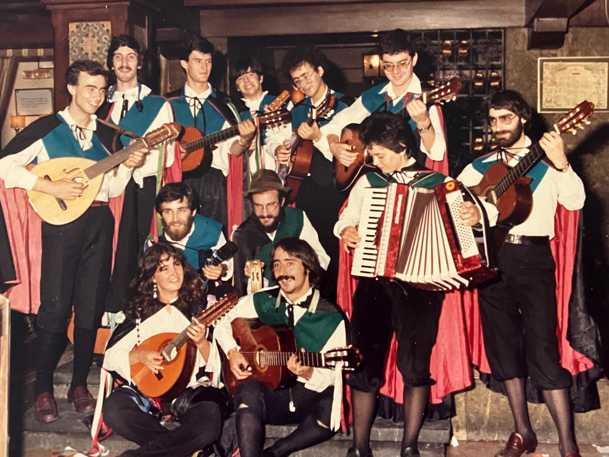

1981 - Los orígenes
La Tuna Universitaria del Gran Bilbao y sus pueblos surge en octubre del año 1981 en el ámbito del Campus Universitario de Leioa de la UPV/EHU.
En octubre del año 81 no había ninguna Tuna Universitaria en activo en toda Bizkaia, y nuestros únicos referentes eran el programa de TVE Gente Joven donde tunas de diferentes lugares de España competían entre sí.

No sería hasta ocho años después, en el 89, que apareciera una tuna hermana en Bilbao, la de Deusto.
Corrían los primeros días del inicio del curso 81-82, a finales de septiembre, cuando a un grupo de estudiantes de la Facultad de Ciencias, tomando unas mistelas en la cafetería del campus, se les ocurrió la genial idea de montar una Tuna Universitaria.